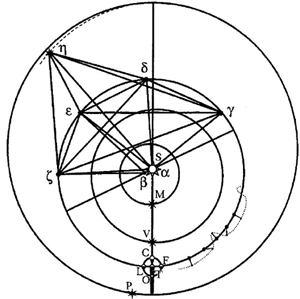

Chapter 37: the "Diameter of Power"
“It would be preferable to attribute to the earth a force that retains the moon, like a sort of chain, which would be there even if the moon did not circle the earth at all.” (p.402)
What causes the moon to increase its rate of motion at conjunction and opposition?
“Now let CLOF be the orb of the moon, O the moon at opposition, C at conjunction, L, F at quadratures, and let it move in the direction OFCL. The question is, by what cause is the moon made to move more swiftly about T at C,O than at F,L, since we have just now mentally removed the eccentricity and epicycles.” (p.401) |
 |
First Hypothesis:
Here, I know, the reader will expect me to say that it is swifter at O because at that place its motion is in the same direction as the motion of all the planets. (p.401) This hypothesis would indeed make the moon move faster at O (when farthest from the sun), but causes it to move more slowly at C (closest to the sun), which goes against Brahe's observations. Watching the end of the moon's trail can help you picture the changing speed. Also, although this causes the moon to move more quickly through space at O, it does not imply that it would appear to move any faster from the earth. |
If this image can help you, you could consider the moon as a teacup from the amusement park ride. Each set of four teacups spins at a constant speed, and the whole platter of teacup-sets moves as well, creating a changing speed of each individual teacup. But standing at the center of a set of four teacups, while watching one, you see only the uniform spin.
Teacup video (These teacup sets move opposite to the platter as a whole, so, unlike the moon, they go quickest towards the center at C and slowest at the outside at O.)
| Next |